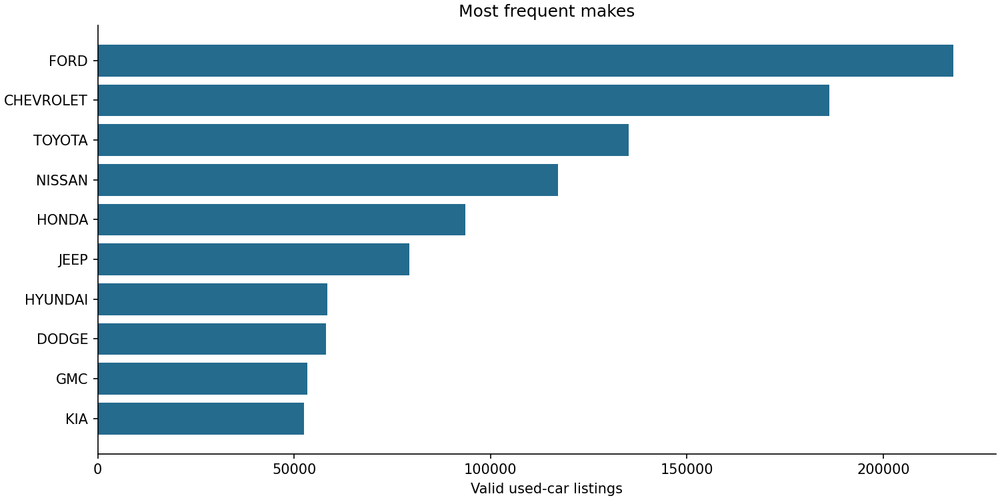
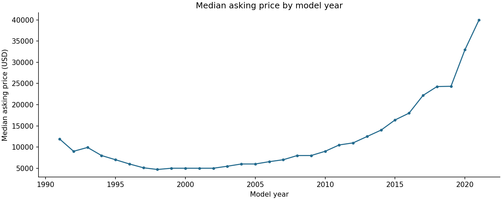

US used-car listing analysis
Kaggle v1 listings, September 2020
Run: kaggle-v1 · Seed: 42
Population and data quality
Used listings only, price > 500 USD, model years
1991–2021. Missing horsepower is imputed from train.
Plausible extreme prices and mileage are flagged and retained.
| disposition | rows |
|---|
| input_rows | 3000040 |
| invalid_rows | 144387 |
| out_of_scope_rows | 1347315 |
| duplicate_rows | 24 |
| silver_rows | 1508314 |
Exclusive primary rejection reasons
| route | primary_reason | count |
|---|
| duplicate | duplicate_listing | 24 |
| invalid | invalid_mileage | 144387 |
| out_of_scope | new_vehicle | 1342938 |
| out_of_scope | price_below_scope | 81 |
| out_of_scope | year_outside_scope | 4296 |
Market overview
| listings | approximate_vehicles | mean_price_usd | median_price_usd | mean_mileage_miles | min_model_year | max_model_year |
|---|
| 1508314 | 1486288 | 22,528.24 | 19,340.00 | 58,586.81 | 1991 | 2021 |


Models
Selected using validation RMSE: gbt_depth5. Models use 74,952 vehicle-group-sampled listings.
| model | rows | mae_usd | rmse_usd | r2 |
|---|
| Train-mean baseline | 11183 | 9,987.15 | 15,734.42 | -0.00 |
| gbt_depth5 | 11183 | 4,055.92 | 7,710.43 | 0.76 |
Target: advertised asking price. MAE and RMSE use USD. These are not sale-price estimates.
Exploratory K-Means segments
| cluster | listings | mean_price_usd | mean_mileage_miles | mean_model_year |
|---|
| 0 | 18551 | 15,188.93 | 90,945.09 | 2,013.84 |
| 1 | 4665 | 62,098.05 | 21,184.47 | 2,018.27 |
| 2 | 8635 | 8,524.74 | 147,755.35 | 2,007.15 |
| 3 | 43101 | 24,270.03 | 31,073.84 | 2,017.78 |
k selected by in-sample squared-Euclidean silhouette; segment labels have no natural order.
Scope and limitations
Historical advertised inventory is not a representative sample of
all US transactions. Source collection: CarGurus inventory, September 2020. No temporal generalization
claim is made. VIN grouping reduces repeated-vehicle leakage; missing VINs use listing/hash fallback.
Descriptions, dealer details and URLs are excluded from predictive features.
Execution: local Spark, 3.5.7;
Python 3.11.17.
Input SHA-256: 82166899dce305dc9df14b2eb7a7455f4e6e5591bef87cdcb46f9f94afc27e2b.
Dataset and usage notice